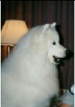
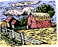
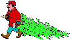
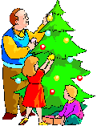
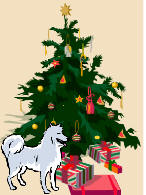
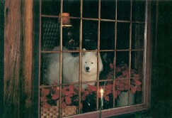

Vice President's Message
by Cheri Hollenback
Given recent experiences in Darlene's life, I asked if I
could give a vice president's message this month. As the Holiday Season
approaches I've been reminded how many wonderful things I have to be
thankful for--even amidst heartbreak.
In a time of crisis, friends stepped forward and did what
needed to be done, even though their heart was aching too. In a time of
suffering, friends reached out across the miles with support and broad
shoulders to carry the burden. To ease the loss and fill a void, a friend
offered a new bundle of love. To lessen the guilt, friends reminded what joy
would have never existed, nor friendships forged, nor clubs benefited if
Darlene and Chance would not have had their dance together.
The Dance
(Garth Brooks)Looking back on the memory of
The dance we shared 'neath the stars
For a moment all the world was right
How could I have known that you'd ever say goodbye
And now I'm glad I didn't know
The way it all would end the way it all would go
Our lives are better left to chance I could have missed the pain
But I'd of had to miss the dance
Yes my life is better left to chance
I could have missed the pain but I'd of had to miss the dance
|
 |
We are so blessed in the Northwest to have such a
community of Samoyed people. May you all have a wonderful Christmas and the
warmth of a Samoyed's heart through the holiday season.
Cheri
Editor's Message
by Liz Swearingen
As I approach the holiday season each year, I find
myself remembering those who are no longer with me to share this season.
As the years go by, I find that this list is growing longer. But, as the
list grows longer so do my memories of the wonderful times I have had with
various human and canine friends.
With Thanksgiving so close I find myself being thankful
for the gift of all the memories and times. Even though the pain of loss
never completely disappears, the joy of the memories becomes stronger and
stronger. For nothing on this earth would I have given up the gift of time
I had with these very special beings in my life. I will always treasure
their influence and know that they continue to watch over me from the
Rainbow Bridge. My only hope is that I can live the remainder of my life
in such a way that it makes them proud that they have memories of me and
my love for them.
My wish for each of you during the upcoming holidays is
that you can be thankful for what you have had and what you will have in
the future. That you will treasure your memories and continue to build new
ones with those around you. That you will live your life with kindness and
gentleness, as we have been taught by our beautiful Samoyeds, and continue
to make both those who are still with you and have gone before you to the
Rainbow Bridge, proud of you.
Liz
By: Liz Swearingen
My name is Samantha and as I looked around I wonder how this had
happened to me. Only a couple of months ago I had a wonderful family, lots
of toys and love. Then one day my Mom and Dad fought and Dad moved out of
the house. Mom started packing everything up and talked with me about how
she had to move to someplace called an apartment that didnt allow pets. I
had never thought of myself as a pet, but as part of the family. What did
this mean?
Too soon, I found out what it meant. One morning, not long after that,
Mom removed my collar and hugged me tight telling me she loved me. Then she
took me for a ride in the car, my favorite thing. Only this time when Mom
stopped the car, she opened the door and let me out but didnt get out with
her. I decided that I was supposed to go potty before we went on, and then
get back in the car. I happily ran out in the grass and pottied, but as I
turned around to return to the car I saw it driving away. I ran and ran as
hard as I could but could not catch it. I tried to shout for Mom to come
back but it did no good, the car just got further and further away.
 Now it is December and it is getting cold and uncomfortable in this field
that I now call home. There is a farmhouse and barn not to far away and
since food is getting scarce I have decided it is time to get a little
closer and see if maybe I can stay in the barn. I have not met the people,
but I dont trust them. I trusted Mom and Dad and it turned out badly. I am
afraid to trust again. As I move closer to the barn I see a truck drive up
and in the back is a tree. I remember a tree like that, Mom and Dad called
it a Christmas tree.
The family from the farmhouse all pile out of the truck. There is a Mom
and Dad, but there is also a little boy and girl. I am close enough to watch
but they cannot see me. As I watch they take the tree out of the truck and
the Dad puts it in a stand while the rest of the family laughingly calls
directions out to him. When they are all satisfied, the Dad picks up the
tree and they all go into the house. I remember the days when we had a tree
in our house. Everyone was happy and singing to the pretty music on the
radio. I got lots of pets and love, and one day I got a bunch of new toys.
The house was all pretty and there were lots of people coming to visit me. I
always did my best to entertain them, and Mom and Dad laughed a lot.

Remembering those days, I got up my nerve and went up to look in the
window. With a tear in my eye, I saw the beautiful home and could feel the
love and happiness of the four people who lived there. I turned away because
it hurt too much not to be a part of it, and because I was afraid one of
them would see me watching them. I went over to the barn and found a nice
warm pile of straw that I could curl up on for a while. It felt so good and
soft compared to the beds I had been using up until then. I must have fallen
asleep because when I woke up, it was dark outside. As I wandered out of the
barn I glanced over at the house and saw the tree in the window with all the
pretty lights on it and lights all around the outside of the house also.
Most of the house appeared to be dark so I decided to take a closer look. As
I gazed in the window, the family was around the fire talking. As the Mom
glanced up, she looked directly into my eyes. I was so scared, but I
couldnt look away. I heard the Mom exclaim Oh no as she rose and dashed
to the door.
I knew I had to hide, but there was nowhere I could go quick enough that
she wouldnt see me. As she came out the door, I heard her calling Puppy,
puppy, puppy. Please dont be frightened I wanted so badly to turn and run
to her but I couldnt do it. I couldnt trust her. She turned and went back
into the house and I knew I had missed my chance. I slowly began to walk
away and then I heard her come back outside. She had simply gone into the
house to get a coat, because it was cold. As I watched her she sat down on
the porch steps and began to talk to me.
 Here
puppy. I wont hurt you. We had a dog until this fall. She was a wonderful
and loving girl, but she got sick and is now at the Rainbow Bridge. She was
a Samoyed, just like you. We miss her very much and I know that she sent you
to us to love. That is the kind of thing she would do. She
always put us before herself and would not hesitate to send us the best
Christmas present she could. Her name was Zanadu and we called her Zan. She
loved this place and would romp and play all day long with my children. They
have been very sad since she died. I am sure Zan has seen that and wants us
to be happy again and to let us know that she is happy and watching over us.
Please come meet me, I think you will like me.
As I watched and listened, I felt the love that this lady was sending my
way. I didnt know why and I didnt understand how, but I truly wanted to
meet her. It sounded as if she were calling me every time she said Zan, it
sounded so much like Sam. I slowly began to approach her and she sat very
still and held her hand out. As I got close enough to sniff her hand she
still held very still and waited for me to put my head under her hand before
she began to pet me. As she told me what a beautiful girl I was she laughed
a little and said well, I know you will be once we can clean you up! After
we got to know each other a little, she asked if I would like to meet the
rest of the family. She had in no way tried to restrain me, but was leaving
it all up to me. She invited the rest of the family out to the porch and
they all sat very quietly and waited for me to come introduce myself.
After a while they invited me into the house and by this time I went
gladly. They took me to the kitchen and put down a pan of water for me and
asked if I was hungry. They put down some food and like the polite dog I am,
I sampled it very delicately before I dug in. I wanted very much, to make a
good impression on this family now. I wanted them to like me and eventually
love me. I wanted them to be my forever home. If they would have me I would
do whatever they wanted. They all sat on the floor with me and let me come
to each one of them for a pet and snuggle. They put a bed down for me in the
kitchen but when they all went up to bed the Mom asked where I was used to
sleeping and asked if I wanted to come upstairs. I went with her and woke up
in the morning on the bed between Mom and Dad. Yes, that quickly, they are
my Mom and Dad. They were still my Mom and Dad that day as they bathed me.
As the days went on, I became a real part of the family and on Christmas
day, I got a new collar and lots of toys.
 As I look back on that Christmas one year ago, I realize how lucky I am.
I am one of the ones that got a second chance with a loving family. I will
always be grateful to Zan because she trained this family for me and I am
now sure, guided me here. I feel like I was specially picked by her to be
with her family and look forward to meeting her someday at the Rainbow
Bridge where we will play and talk about our family. Of course my family
never learned my first name but came up with a name I think is the best
every. My name is Santy Claws.

With the holidays upon us, it is always a good time to remind ourselves
of the plants that are toxic to animals. Here is a listing of some of the
more common ones you may find around your house, particularly over the
holidays.
Aladium Amarylillis
Angels Trumpets
Apple Leaf Croton
Asparagus Fern
Autumn Crocus
Avacado (fruit & pit)
Azalea
Babys Breath
Begonia
Bird of Paradise
Bittersweet
Branching Ivy
Buckey Buddis
Pine
Caladium
Calla Lily
Castor Bean
Ceriman
Charming Dieffenbachia
Chinese Evergreen
Chocolate
Christmas Rose
Cineraria
Clematis
Cordatum
Corn Plant
Cornstalk Plant
Croton
Cuban Laurel
Cutleaf Philadendron
Cycads
Cyclamen
Daffodil
Devils Ivy
Dianthus
Dieffenbachia
Dracaena Palm
Dragon Tree
Dumb Cane
Easter Lily (in cats!!!)
Elaine
Elephant Ears
Emerald Feather
English Ivy
Fiddle-leaf
Fig
Fig, Creeping
Fig, Weeping
Florida Beauty
Foxglove
Fruit Salad Plant
Geranium
German Ivy
Giant Dumb Cane
Glacier Ivy
Gold Dieffenbachia
Gold Dust Dracaena
Golden Pothos
Grapes
Hahns Self-Branching Ivy
Heartland Philodendron
Hemlock, Water
Hens & Chicks
Hops
Hurricane Plant
Hyacinth
Hydrangea leaves
Impatiens
Indian Rubber Plant
|
Ivy, Boston
Ivy, English
Ivy, Pathos
Janet Craig Dracaena
Japanese Show Lily (cats!!!)
Jasmine
Jerusalem Cherry
Jonquil
Kalanchoe
Lacy Tree Philodendron
Lantana
Lily of the Valley
Madagascar Dragon Tree
Marble Queen
Marijuana
Mexican Breadfruit
Miniature Croton
Mistletoe
Mistletoe berries
Morning Glory
Mother-in-law's Tongue
Narcissus
Needlepoint Ivy
Nephytis
Nightshade
Oleander
Onion
Oriental Lily (cats!!!)
Pathos
Peace Lily
Pencil Cactus
Philodendron
Plumosa Fern
Poinsettia (low toxicity)
Poison Ivy
Poison Oak
Potato Plant (green fruit, stem and leaves)
Pothos
Precatory Bean
Primrose
Red Emerald
Red Margined Dracaena
Red Princess
Rhododendron
Ribbon Plant
Saddle Leaf Philodendron
Sago Palm
Satin Pothos
Scheffelera
Silver Pothos
Spider Plant
Spotted Dumb Cane
Stargazer Lilly (cats!!!)
String of Pearls
Striped Dracaena
Sweetheart Ivy
Swiss Cheese Plant
Taro Vine
Tiger Lily (cats!!!)
Tobacco
Tomato Plant (green fruit, stem and leaves)
Tree Philodendron
Tropic Snow Dieffenbachia
Tulip bulbs
Weeping Fig
Wisteria
Yew (American/English/Western) |
Additional information is available through the ASPCA Animal Poison Control
Center. They may be contacted at 888-4ANI-HELP OR 888-426-4435, or you can
obtain additional information through their web site at: http://www.aspca.org/site/PageServer?pagename=apcc).
They offer a unique, emergency hotline providing 24-hour-a-day, 7-day-a-week
telephone assistance to veterinarians and animal owners. The Center's
hotline veterinarians can quickly answer questions about toxic substances
found in our everyday surroundings that can be dangerous to animals. The one
caution for this is that there is a $45 consultation fee paid by the animal
owner, veterinarian or product manufacturer.
If you have a question regarding a possible poison and your pet, you may
also contact the Poison Control Center at 1-800-222-1222 for no fee. They
are very receptive to telephone calls about pets and they even follow up
with you later to see how things turned out.
If you suspect that your pet has been exposed to a poison, it is
important not to panic. While rapid response is important, panicking
generally interferes with the process of helping your pet. Take 30 to 60
seconds to safely collect and have at hand the material involved. This may
be of great benefit to the Center professionals as they determine exactly
what poison or poisons are involved.
In the event that you need to take your pet to your local veterinarian,
be sure to take with you any product container. Also take any material your
pet may have vomited or chewed, collected in a zip-lock bag. If your pet is
seizing, losing consciousness, unconscious or having difficulty breathing,
you should contact your veterinarian immediately. Most veterinarians are
familiar with the consulting services of the Center. Depending on your
particular situation, your local veterinarian may want to contact the Center
personally while you bring your pet to the pet hospital.
When you call the either Center, be ready to provide:
Your name, address and telephone number
Information concerning the exposure (the amount of agent, the time
since exposure, etc.). For various reasons, it is important to know
exactly what poison the pet was exposed to. [If the agent is part of the
Pet Product Safety Service, the consultation is at no cost to the
caller.]
The species, breed, age, sex, weight and number of pets involved
The agent your pet(s) has been exposed to, if known
The problems your pet(s) is experiencing.
Your pet may become poisoned in spite of your best efforts to prevent it.
Because of this, you should be prepared.
Your pet companions regularly should be seen by a local veterinarian to
maintain overall health. You should know the veterinarian's procedures for
emergency situations, especially ones that occur after usual business hours.
You should keep the telephone numbers for the veterinarian, the Poison
Control Centers, and a local emergency veterinary service in a convenient
location.
You may benefit by keeping a pet safety kit on hand for emergencies. Such
a kit should contain:
A fresh bottle of hydrogen peroxide 3% (USP)
Can of soft dog or cat food, as appropriate
Turkey baster, bulb syringe or large medicine syringe
Saline eye solution to flush out eye contaminants
Artificial tear gel to lubricate eyes after flushing
Mild grease-cutting dishwashing liquid in order to bathe an pet
after skin contamination
Rubber gloves to prevent you from being exposed while you bathe
the pet
Forceps to remove stingers
Muzzle to keep the pet from hurting you while it is excited or in
pain
Pet carrier to help carry the pet to you local veterinarian.
|

October, 2002